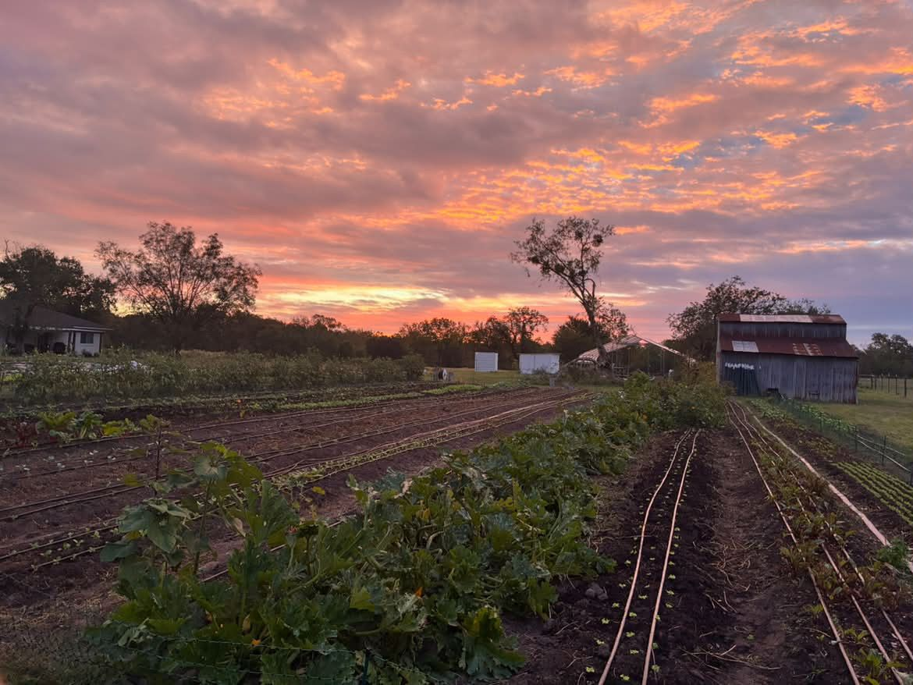
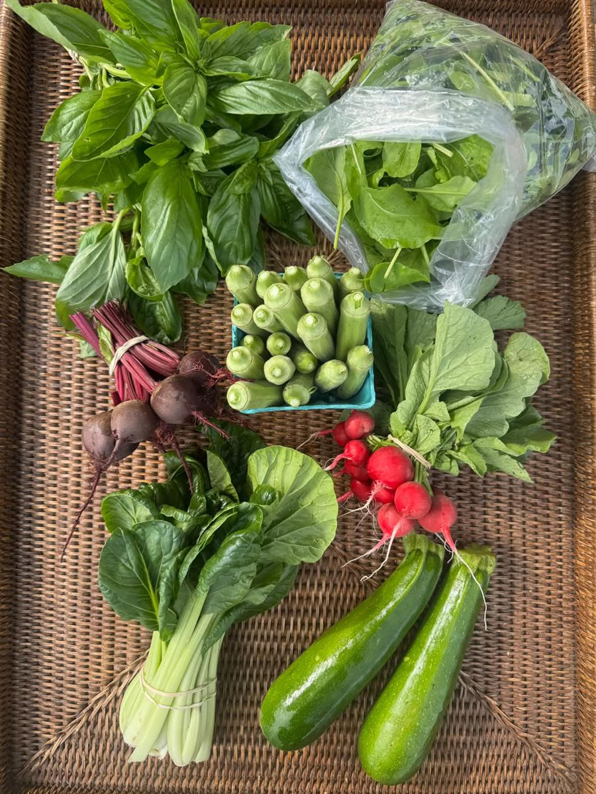
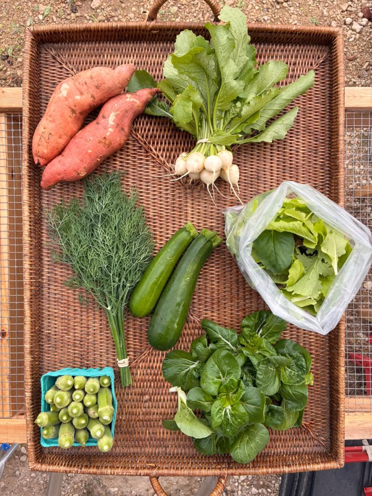
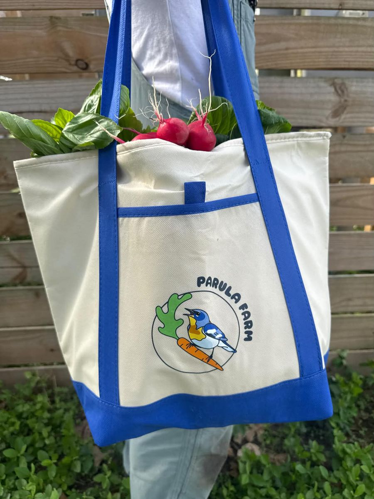

Local spotlight · Nov 5, 2026

Not an ad! I'm just really passionate about buying local (and honestly, I'm about to sign up myself).
Parula Farm is a small farm in Bellville growing the regenerative, organic way, with no synthetic sprays. This fall is their very first CSA, and they still have a few spots open.
It stands for Community Supported Agriculture, a partnership between you and a local farmer. You buy a "share" of the farm's season, and every week you pick up a bag of whatever they just harvested.


Honestly, there aren't many CSAs around here (at least that I can find!), so having one right in Bellville is kind of special. Small farms need us now more than ever, and buying local is how they keep going. That's exactly why we wanted them as our very first Local Spotlight.

Sign up at parulafarm.com @parulafarm on Instagram
Tell them Brenham Every Day sent you!
Send us a message on Instagram or Facebook. See all our spotlights.